Un árbol ofrece todas las particiones a la vez; los métodos de este bloque buscan directamente una. Aquí están k-means y su versión sembrada con el árbol, PAM y CLARA, el agrupamiento difuso, las mezclas gaussianas, DBSCAN y el agrupamiento espectral: ocho algoritmos con supuestos distintos, juzgados todos con la misma silueta y comparables entre sí con el mismo número de grupos.
El Bloque 5 tiene tres tarjetas. En 1 · Choose the method eliges el algoritmo, el número de grupos y sus parámetros. 2 · The partition muestra el resultado con sus casillas, comprobaciones, tablas y figuras. 3 · Compare methods at the same k corre varios algoritmos con el mismo k y mide cuánto coinciden. La tarjeta de teoría resume en tres lecciones qué supone cada método. El bloque se activa en cuanto el Bloque 3 calcula una matriz; si además construiste un árbol en el Bloque 4, el valor inicial de k es el de su corte.
| Método | Trabaja con | Supone | ¿Pide k? | Fortaleza |
|---|---|---|---|---|
| k-means | coordenadas | grupos redondos, de tamaño parecido, euclidianos | sí | Rápido y bien conocido; muchos arranques evitan óptimos malos. |
| Hierarchical k-means | coordenadas | como k-means | sí | Arranca de los centroides del árbol del Bloque 4: reproducible. |
| PAM (k-medoids) | cualquier disimilitud | grupos alrededor de un objeto central | sí | Resiste atípicos; los medoides son objetos reales; Gower, Bray–Curtis y Jaccard sirven. |
| CLARA | cualquier disimilitud | como PAM | sí | Miles de objetos. |
| Fuzzy c-means | coordenadas | como k-means, con fronteras suaves | sí | Los grados de pertenencia revelan objetos intermedios y gradientes. |
| Gaussian mixture (EM + BIC) | coordenadas | componentes gaussianas elipsoidales | el BIC elige | Probabilidad e incertidumbre por objeto; el BIC elige k y la forma. |
| DBSCAN | cualquier disimilitud | regiones densas separadas por zonas vacías | no (ε, minPts) | Formas arbitrarias; marca los atípicos como ruido. |
| Spectral | cualquier disimilitud | grafo de vecindad conectado | sí | Formas curvas, anidadas o alargadas (lunas, anillos). |
| Si… | propone |
|---|---|
| la entrada es una matriz de distancias | PAM: trabaja sobre la matriz y sus medoides son objetos reales. |
| los datos son mixtos, nominales, binarios u ordinales | PAM, por la misma razón: el coeficiente del Bloque 3 no es una distancia euclidiana entre coordenadas. |
| es una tabla de comunidades | PAM sobre Bray–Curtis (o k-means sobre datos con Hellinger). |
| el Bloque 2 marcó atípicos extremos | PAM: los medoides resisten los atípicos mejor que los centroides. |
| son cuantitativos y hay árbol en el Bloque 4 | k-means jerárquico: sembrado con los centroides del corte, reproducible. |
| son cuantitativos sin árbol | k-means (Hartigan–Wong, muchos arranques). |
La fuente de coordenadas se fija sola: la matriz de trabajo si el coeficiente del Bloque 3 es euclidiano (o una matriz cargada), los ejes del PCoA en cualquier otro caso. El valor inicial de k es el corte del Bloque 4, o el número de grupos conocidos, o 3.
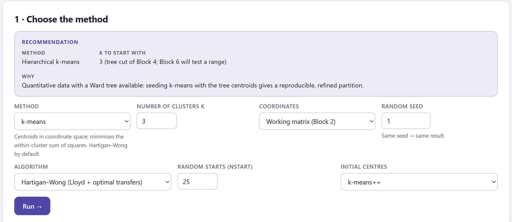
1 2 3 4 5 6 7k-means es el método de particionamiento más usado. Viste cómo trabaja paso a paso en el demo de la portada (capítulo 2); aquí interesan sus variantes, sus parámetros y lo que devuelve la app.
k-means busca k centros que hagan mínima la suma de cuadrados dentro de los grupos (W): la suma, sobre todos los objetos, del cuadrado de su distancia al centro de su grupo. Como la suma de cuadrados total (T) no depende de la partición, minimizar W equivale a maximizar la suma entre grupos, B = T − W. La casilla Between-SS / total-SS da B/T, el porcentaje de la variación que explica la partición.
Encontrar el mínimo exacto es imposible salvo con muy pocos objetos; los algoritmos llegan a un mínimo local que depende de dónde empiezan. Por eso se repite desde muchos arranques y se conserva el de menor W.
| Control | Opciones y efecto |
|---|---|
| Algorithm | Hartigan–Wong (predeterminado): iteraciones de Lloyd seguidas de pasadas de transferencia óptima, que mueven un objeto de grupo si eso baja W aunque el objeto esté más cerca de su centro actual; suele dar el W más bajo. Lloyd / Forgy: asigna todos los objetos y luego mueve todos los centros, hasta que nada cambia. MacQueen: actualiza el centro después de cada reasignación individual. |
| Random starts (nstart) | Cuántas veces se repite desde centros iniciales distintos (25 por defecto, hasta 500). Se conserva la solución con menor W. |
| Initial centres | k-means++: el primer centro al azar y cada siguiente con probabilidad proporcional al cuadrado de su distancia a los ya elegidos, lo que reparte los centros. Random objects: k objetos al azar. |
| Random seed | Fija el sorteo de arranques: con la misma semilla el resultado es idéntico. |
k-means jerárquico (Hierarchical k-means) no sortea nada: corta el árbol del Bloque 4 en k grupos, calcula sus centroides y corre un solo k-means de Hartigan–Wong desde ellos. Combina lo mejor de ambos mundos: la partición es reproducible, como la del árbol, y luego se refina para reducir W, cosa que el corte de un árbol no hace. Necesita que exista un árbol; si no, la app lo avisa.
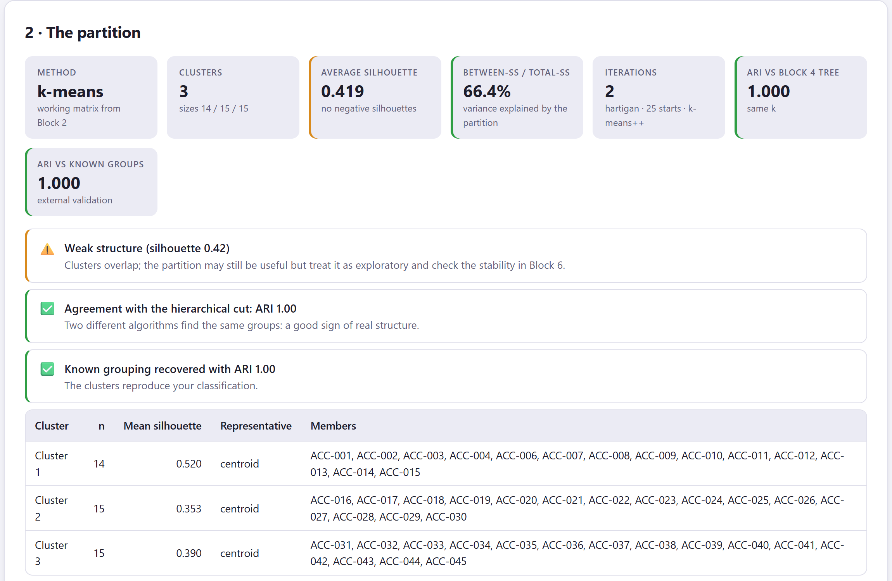
1 2 3| Casilla | Qué es | Semáforo |
|---|---|---|
| Method · Clusters | Método y espacio de trabajo; número de grupos con sus tamaños (con DBSCAN, objetos de ruido). | — |
| Average silhouette | Silueta media sobre la disimilitud del Bloque 3 y cuántos objetos tienen silueta negativa. Con ruido, se calcula sin él; con un solo grupo, no está definida. | verde ≥ 0.5 · ámbar 0.25–0.5 · rojo < 0.25 |
| Between-SS / total-SS | Variación explicada (métodos de coordenadas). | verde > 60 % · ámbar > 40 % |
| Iterations | k-means: iteraciones, algoritmo, arranques y tipo de inicio. | — |
| Total cost · Best sample | PAM: suma de disimilitudes a los medoides e intercambios. CLARA: mejor muestra, tamaño y costo. | — |
| Partition coefficient | Fuzzy c-means: coeficiente de partición, su versión normalizada y la entropía (sección 6.3). | normalizado: verde > 0.7 · ámbar > 0.4 · rojo |
| Model · Mean uncertainty | Mezclas: modelo y k elegidos, BIC y log-verosimilitud; incertidumbre media y objetos por encima de 0.25. | — |
| ε · minPts · Noise | DBSCAN: parámetros y si ε salió de la rodilla; ruido y puntos núcleo. | ruido: ámbar > 30 % |
| Affinity graph | Espectral: tipo de grafo, vecinos y σ. | — |
| ARI vs Block 4 tree · ARI vs known groups | Índice de Rand ajustado con el corte del árbol y con la agrupación conocida. | verde > 0.7 · ámbar > 0.4 |
| Comprobación | Nivel | Qué sugiere |
|---|---|---|
| Strong / Reasonable / Weak / No substantial structure | ✅ ✅ ⚠️ ⛔ | Silueta media ≥ 0.7, ≥ 0.5, ≥ 0.25 o menor. Con estructura débil, trata la partición como exploratoria y comprueba su estabilidad en el Bloque 6. |
| Cluster N is poorly defined | ⚠️ | El peor grupo tiene silueta media < 0.2: puede ser un grupo sobrante o un gradiente partido en dos. |
| N tiny clusters | ⚠️ | Grupos de menos de 3 objetos: probablemente atípicos. PAM o DBSCAN los manejan mejor. |
| Agreement with the hierarchical cut | ✅ ℹ️ | Con el mismo k que el árbol: ARI > 0.7, dos algoritmos distintos encuentran los mismos grupos; si no, los objetos que cambian son los ambiguos. |
| Known grouping recovered with ARI | ✅ ℹ️ ⚠️ | Acuerdo con la agrupación conocida (> 0.7, 0.4–0.7, menor). |
| Coordinate method on the working matrix | ℹ️ | Un método de coordenadas sobre la matriz de trabajo cuando el Bloque 3 usó otro coeficiente: elige los ejes del PCoA o compara con PAM (sección 6.6). |
| The silhouette ignores the noise objects | ℹ️ | DBSCAN con más del 20 % de ruido: la silueta describe solo los núcleos densos. |
| More than 30 % of the objects are noise · A single dense cluster | ⚠️ ℹ️ | DBSCAN: sube ε o baja minPts; o baja ε para dividir el único grupo. |
| Very fuzzy partition | ⚠️ | Coeficiente de partición normalizado < 0.4: los grupos se traslapan mucho o m es demasiado grande (prueba 1.5). |
| BIC chose … with k = … | ℹ️ | Cuántos ajustes se compararon y qué modelo ganó; prefiere el más simple cuyo BIC quede a pocas unidades del mejor. |
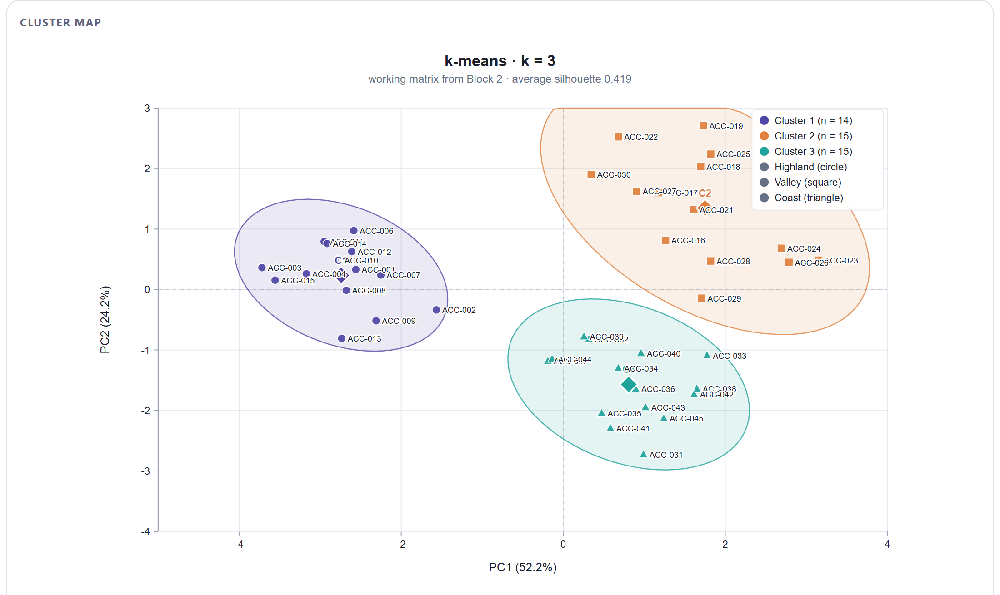
PAM (partitioning around medoids) es k-means con dos cambios decisivos: el centro de cada grupo es un objeto real, el medoide, y lo que se minimiza es la suma de disimilitudes, no de cuadrados. Por eso acepta cualquier matriz del Bloque 3 y un atípico pesa mucho menos.
PAM trabaja en dos fases. BUILD elige un primer medoide, el objeto con menor suma de disimilitudes a todos, y va añadiendo, uno a uno, el objeto que más reduce el costo total. SWAP prueba intercambiar cada medoide por cada objeto que no lo es, aplica el intercambio que más baje el costo y repite hasta que ningún intercambio mejora. Al final cada objeto va al medoide más cercano. La casilla Total cost da ese costo y cuántos intercambios hicieron falta; con grupos claros, BUILD suele acertar y SWAP no cambia nada.
CLARA aplica PAM a varias muestras aleatorias del conjunto (5 por defecto, de 40 + 2k objetos) y asigna todos los objetos a los medoides de cada muestra; se queda con los medoides de menor costo total. Hace posible trabajar con miles de objetos; con pocos, la muestra abarca a todos y CLARA coincide con PAM.
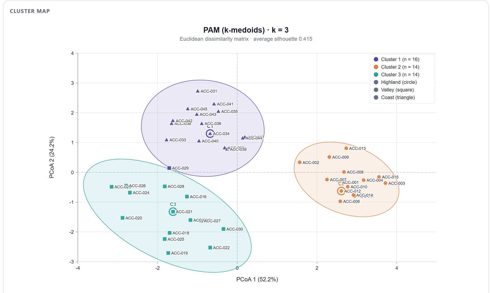
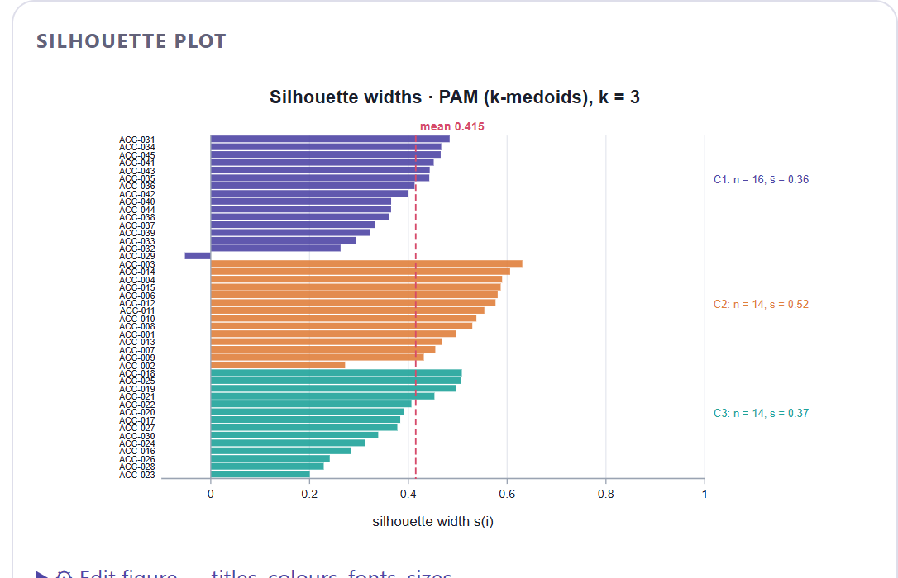
| Control | Efecto |
|---|---|
| PAM | Solo k. Es determinista (no usa semilla). Límite en la app: 800 objetos; por encima, usa CLARA. |
| Samples (CLARA) | Número de muestras (1 a 50). Más muestras, más probable encontrar buenos medoides. |
| Sample size (CLARA) | Objetos por muestra; 0 = 40 + 2k. Si es mayor que n, se usan todos. |
En las particiones anteriores cada objeto pertenece a un solo grupo. Fuzzy c-means le da, en cambio, un grado de pertenencia a cada grupo, entre 0 y 1, que suma 1 por objeto. Un objeto con 0.95 en un grupo es típico; uno con 0.47, 0.30 y 0.23 está entre grupos.
El algoritmo alterna dos pasos, como k-means: calcula las pertenencias de cada objeto según su distancia relativa a los centros, y mueve cada centro al promedio de todos los objetos ponderados por su pertenencia elevada a m. El fuzzificador m controla cuán suaves son las fronteras: con m cercano a 1 las pertenencias se acercan a 0 o 1 (casi k-means); con m = 2, el valor habitual, son claramente graduales; con m mayor todo tiende a 1/k. La partición "dura" que muestran el mapa y la silueta asigna cada objeto a su pertenencia máxima.
El coeficiente de partición de Dunn es el promedio de la suma de cuadrados de las pertenencias: vale 1 si todas son 0 o 1 y 1/k si todas son iguales. La versión normalizada, (k·PC − 1)/(k − 1), va de 0 a 1 sea cual sea k. La entropía de partición mide lo mismo al revés: 0 es nítido.
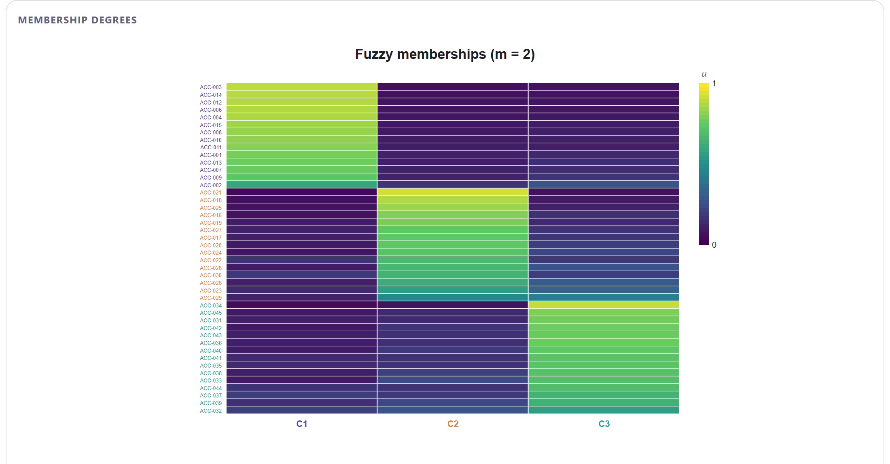
| Elemento | Qué es |
|---|---|
| Fuzzifier m | De 1.1 a 5; 2 por defecto. Más cerca de 1, más nítido. |
| Mapa con Fade uncertain objects | La opacidad de cada punto sigue su pertenencia máxima: los objetos intermedios, en los bordes de las elipses, se ven pálidos. |
| ⬇ Cluster membership (CSV) | Añade una columna u_C1, u_C2… por grupo, además del grupo asignado y la silueta. |
El agrupamiento basado en modelos supone que los datos provienen de una mezcla de distribuciones normales multivariadas, una por grupo, cada una con su media, su matriz de covarianzas y su proporción. Ajustar la mezcla da a cada objeto una probabilidad de pertenecer a cada componente y permite elegir k y la forma de los grupos con un criterio estadístico, el BIC.
El algoritmo EM parte de un k-means y alterna dos pasos: el paso E calcula, con los parámetros actuales, la probabilidad posterior de cada objeto en cada componente; el paso M reestima medias, covarianzas y proporciones ponderando por esas probabilidades. Cada vuelta aumenta la verosimilitud, hasta que deja de cambiar. La incertidumbre de un objeto es 1 menos su probabilidad máxima.
El BIC que usa la app es 2·log-verosimilitud − (número de parámetros)·log n: más alto es mejor. Premia el ajuste y castiga la complejidad, de modo que un modelo con covarianzas libres solo gana si mejora mucho la verosimilitud. Un componente con menos objetos que los que necesita para estimar su covarianza (menos de p + 2 en VVV, 3 en VVI, 2 en los demás) se considera degenerado y el ajuste se rechaza.
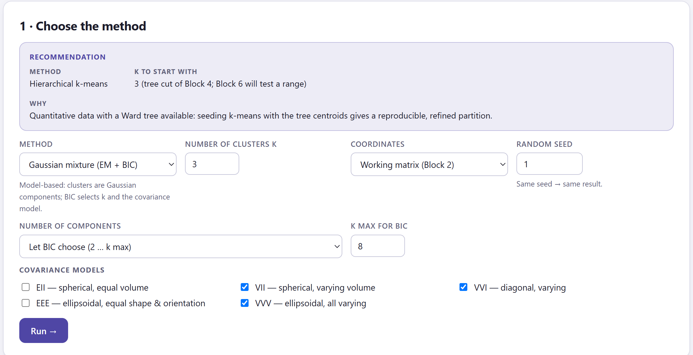
| Modelo | En la app | Forma de los grupos | Parámetros de covarianza |
|---|---|---|---|
| EII | spherical, equal volume | Esferas del mismo tamaño (lo que supone k-means). | 1 |
| VII | spherical, varying volume | Esferas de tamaños distintos. | k |
| VVI | diagonal, varying | Elipsoides alineados con los ejes, de forma y tamaño libres. | k·p |
| EEE | ellipsoidal, equal shape & orientation | Elipsoides girados, todos iguales. | p(p + 1)/2 |
| VVV | ellipsoidal, all varying | Elipsoides libres en todo. | k·p(p + 1)/2 |
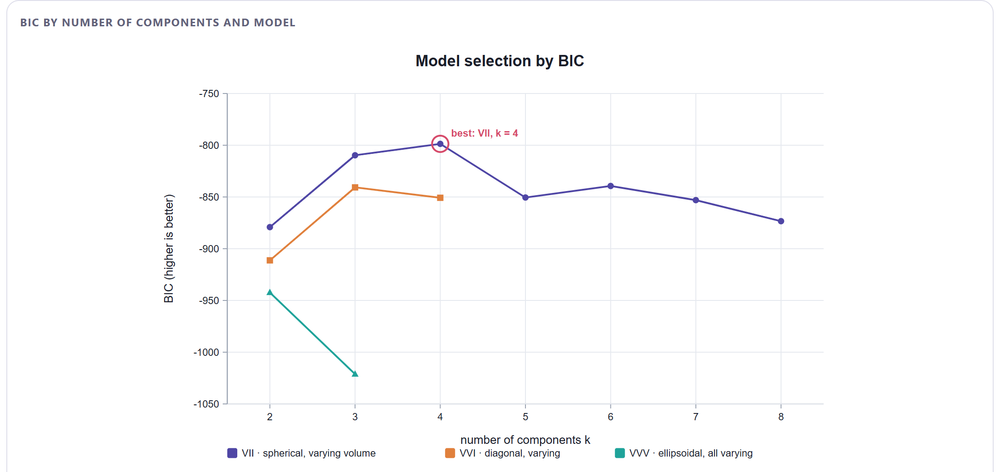
Con el maíz, el BIC prefiere cuatro componentes: separa las accesiones de valle en un grupo de 10 y otro de 5 (ARI con las regiones 0.873). No es un error: con componentes esféricos, un grupo algo alargado se describe mejor con dos esferas. Once unidades de BIC entre k = 3 y k = 4 son poca diferencia. La regla práctica de la comprobación se aplica aquí: prefiere el modelo más simple cuyo BIC esté a pocas unidades del mejor, y deja que el Bloque 6 decida k con más criterios. Para ver la solución de tres componentes, elige Fixed k con k = 3.
Los dos métodos restantes no suponen grupos redondos. DBSCAN los define por densidad y deja fuera, como ruido, lo que no es denso. El agrupamiento espectral los define por conectividad en un grafo de vecinos. Ambos trabajan sobre la matriz.
Con ε en 0, la app lo elige sola. Para cada objeto calcula la distancia a su vecino número minPts − 1, ordena esas distancias de mayor a menor y busca la rodilla: el punto de la curva más alejado de la recta que une sus extremos. Los objetos cuya distancia queda por encima de ε no son núcleo; pueden terminar como frontera o como ruido. La regla práctica para minPts es el número de dimensiones más uno, y al menos 4.
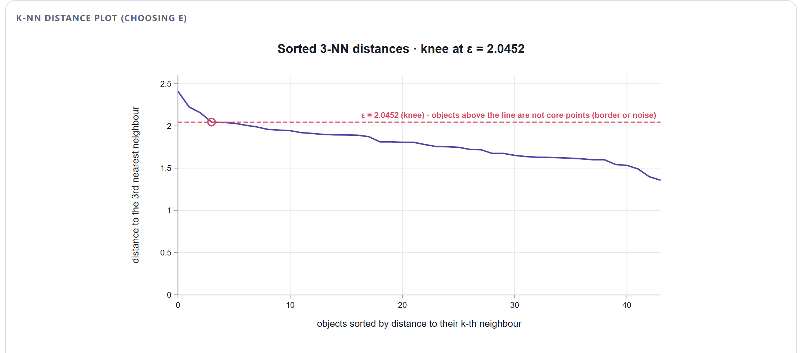
Después de correr DBSCAN, el campo ε muestra el valor que eligió la rodilla. Si luego calculas otra matriz en el Bloque 3 o cargas otros datos, el campo vuelve a 0 para que la rodilla se recalcule: un ε pensado para otra escala de distancias no tendría sentido. Si quieres un ε fijo, escríbelo después de calcular la matriz.
El agrupamiento espectral convierte la matriz en un grafo: cada objeto se une a sus vecinos más cercanos (7 por defecto) con un peso gaussiano que decrece con la distancia, exp(−d²/2σ²), donde σ es por defecto la mediana de las distancias a esos vecinos. Luego normaliza el grafo, toma los k primeros vectores propios, que resumen cómo está conectado, y corre k-means sobre ellos. Dos objetos lejanos en línea recta pero unidos por una cadena de vecinos quedan juntos, por eso recupera lunas y anillos que k-means rompe. Los controles son Affinity graph (grafo de k vecinos o totalmente conectado), Neighbours y Kernel width σ. En la app admite hasta 500 objetos.
k-means, k-means jerárquico, fuzzy c-means y las mezclas gaussianas necesitan coordenadas: calculan medias de objetos. PAM, CLARA, DBSCAN y el espectral usan la matriz directamente. El menú Coordinates decide de dónde salen las coordenadas cuando hacen falta.
| Fuente | Qué es | Úsala cuando |
|---|---|---|
| Working matrix (Block 2) | La matriz de trabajo: variables transformadas y escaladas, con indicadoras para las nominales. | El coeficiente del Bloque 3 es la euclidiana sobre esas variables. |
| PCoA axes of the Block 3 dissimilarity | Todos los ejes positivos del análisis de coordenadas principales de la matriz: coordenadas euclidianas que reproducen la disimilitud lo mejor posible. | El coeficiente es otro (Bray–Curtis, Jaccard, Gower…): así el método de coordenadas respeta la disimilitud elegida. |
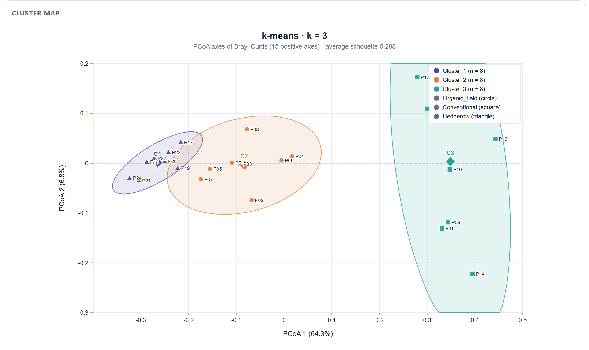
Sea cual sea el método y la fuente de coordenadas, la silueta se mide con la disimilitud del Bloque 3. Así todos los métodos se juzgan con la misma vara y la comparación de la tarjeta 3 es justa. La casilla Between-SS / total-SS, en cambio, se calcula en el espacio de coordenadas que usó el método, así que no es comparable entre fuentes distintas.
El bloque produce hasta cinco figuras, todas editables y exportables. El mapa, la silueta y los tamaños aparecen con cualquier método; el mapa de pertenencias, con fuzzy c-means y mezclas; el gráfico de vecinos, con DBSCAN; el perfil del BIC, con mezclas cuando se comparan varios ajustes.
| Figura | Qué muestra | Controles propios |
|---|---|---|
| Cluster map | Los objetos sobre dos ejes, por grupo (figuras 6.3, 6.4 y 6.10). | Cluster region (elipse del 95 %, envolvente convexa o nada) y su opacidad; Centres (centroide ◆, medoide como anillo o nada); números de grupo; etiquetas (automáticas hasta 60); tamaño y forma de punto; Shape by known group; Fade uncertain objects; color del ruido; paleta y leyenda. |
| Silhouette plot | Una barra por objeto, ordenadas dentro de cada grupo, con la media en rojo y el resumen por grupo a la derecha (figura 6.4). | Object labels (n ≤ 80), color de la línea media, paleta. |
| Cluster sizes | Objetos por grupo con su silueta media; el ruido en gris. | Color del ruido, paleta. |
| Membership degrees / Posterior membership probabilities | Pertenencias o probabilidades por objeto y grupo (figura 6.5). | Colour map, etiquetas (hasta 80), paleta. |
| k-NN distance plot | Distancias al vecino minPts − 1, ordenadas, con ε y la rodilla (figura 6.9). | Título, paleta. |
| BIC by number of components and model | BIC de cada ajuste, con el mejor marcado (figura 6.7). | Paleta y leyenda. |
Para cada objeto, a es su disimilitud media a los demás de su grupo y b la disimilitud media al grupo vecino más cercano; su silueta es (b − a)/máx(a, b). Una barra larga hacia la derecha es un objeto bien colocado; una barra cerca de cero, un objeto en la frontera; una barra hacia la izquierda, un objeto que estaría mejor en el grupo vecino. Un grupo de barras cortas y parejas es un grupo difuso; un grupo con unas pocas barras negativas al final tiene miembros mal asignados. Los umbrales de la media son los de la sección 1.9: 0.7 fuerte, 0.5 razonable, 0.25 débil.
⬇ Cluster membership (CSV) guarda, por objeto, su etiqueta, la agrupación conocida si existe, el grupo asignado (0 = ruido), las pertenencias o probabilidades si el método las da y la silueta. La partición de este bloque es la que usan el Bloque 6, para validarla, y el Bloque 7, para describir los grupos; el informe del Bloque 8 incluye sus casillas, tablas y figuras tal como las editaste.
La tercera tarjeta corre los métodos marcados con el k de la tarjeta 1 y mide su acuerdo con el índice de Rand ajustado. DBSCAN no participa porque elige su propio número de grupos; en cambio puede entrar el corte del árbol del Bloque 4. Vienen marcados el corte, k-means, PAM, fuzzy c-means y la mezcla gaussiana.
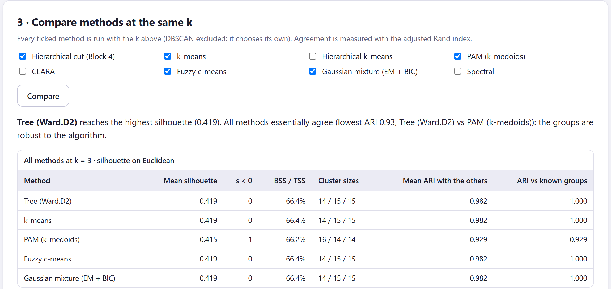
| Elemento | Qué es |
|---|---|
| Mean silhouette · s < 0 | Silueta media sobre la matriz del Bloque 3 y objetos con silueta negativa. |
| BSS / TSS | Variación explicada, en el espacio de coordenadas elegido en la tarjeta 1. |
| Cluster sizes | Tamaños de los grupos. |
| Mean ARI with the others | Promedio del ARI con los demás métodos: el más alto es el más "central". |
| ARI vs known groups | Acuerdo con la agrupación conocida, si existe. |
| Párrafo | Nombra el método de mayor silueta y lee el ARI mínimo entre pares: > 0.8, All methods essentially agree (grupos robustos al algoritmo); 0.5–0.8, Moderate agreement (un núcleo estable y el resto depende del método); menor, Methods disagree (la partición no es robusta: revisa k en el Bloque 6 o los supuestos de los métodos). |
Para que la comparación sea rápida y reproducible, cada método se corre con valores estándar, no con los de la tarjeta 1: k-means con 10 arranques y k-means++, k-means jerárquico desde el corte, PAM y CLARA con sus valores por defecto, fuzzy c-means con m = 2, la mezcla con k fijo y los modelos VVI y VVV, y el espectral con 7 vecinos. Todos usan la semilla y la fuente de coordenadas de la tarjeta 1. Por eso la mezcla da tres grupos aquí aunque el BIC haya preferido cuatro.
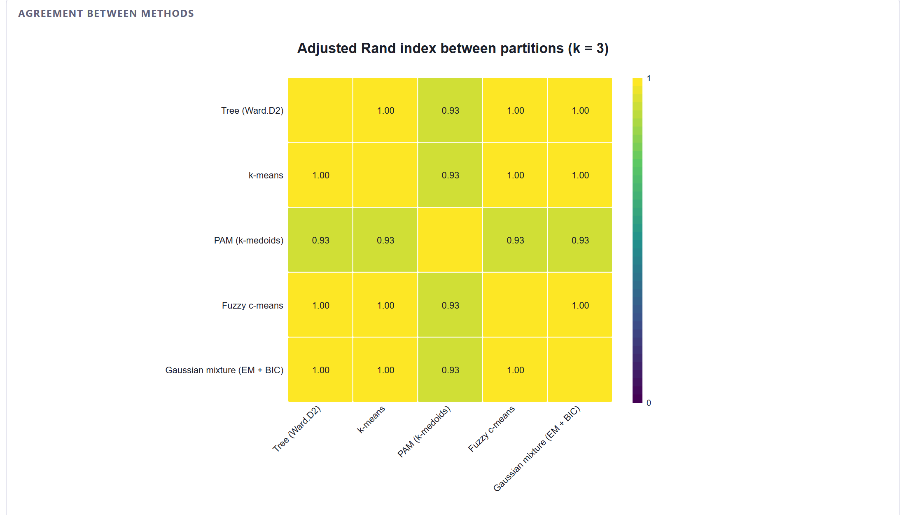
Con cada ejemplo preparado en los Bloques 2 a 4 con los valores propuestos (UPGMA en los ejemplos binario y de insectos, como en el capítulo 5), la tabla 6.11 resume el método que propone el Bloque 5 y otras corridas que enseñan algo. Las prácticas se detienen en cada caso.
| Ejemplo | Método | k | Silueta | ARI grupos | Observación |
|---|---|---|---|---|---|
| Razas de maíz | k-means jerárquico* | 3 | 0.419 | 1.000 | Igual que k-means, fuzzy, DBSCAN y espectral. |
| PAM | 3 | 0.415 | 0.929 | ACC-029 con silueta negativa. | |
| Mezcla (BIC) | 4 | 0.387 | 0.873 | VII divide los valles en 10 y 5. | |
| Presencia de especies | PAM* | 3 | 0.334 | 1.000 | Separa el sitio S05 mejor que el árbol. |
| DBSCAN | 2 | 0.551 | 0.462 | 57 % de ruido; la silueta solo ve los núcleos. | |
| Abundancia de insectos | PAM* | 3 | 0.294 | 0.610 | 4 / 8 / 12: parte los campos orgánicos. |
| k-means sobre PCoA | 3 | 0.288 | 1.000 | 8 / 8 / 8: los tres paisajes. | |
| Perfiles de suelo | PAM* | 2 | 0.575 | — | Igual que el árbol; fuzzy y mezcla mueven un perfil. |
| Matriz de distancias | PAM* | 3 | 0.665 | — | DBSCAN (minPts 3) deja a Olotillo como ruido. |
| Cuatro grupos simulados | k-means jerárquico* | 4 | 0.714 | 1.000 | Estructura fuerte; DBSCAN sin ruido. |
| Ruido uniforme | k-means jerárquico* | 3 | 0.174 | — | Aviso rojo; los métodos no coinciden (ARI mínimo 0.19). |
* Método propuesto por la app. Con árbol en el Bloque 4 y datos cuantitativos propone k-means jerárquico, que en estos tres ejemplos da la misma partición que k-means.
Cuando la estructura es clara, algoritmos con supuestos muy distintos (centroides, medoides, pertenencias, densidad, grafos) llegan al mismo sitio, y ese acuerdo es la mejor evidencia de que los grupos son reales. Lo que cambia son los detalles, y son informativos: PAM, fuzzy c-means y la silueta señalan la misma accesión dudosa, ACC-029, y la mezcla gaussiana sugiere que el grupo de valles tiene subestructura. Nada de eso cambia la conclusión principal, pero son los objetos que conviene revisar en los datos originales. Y la silueta de 0.42, "débil", convive con un acuerdo perfecto: tres grupos que se tocan pueden ser muy estables.
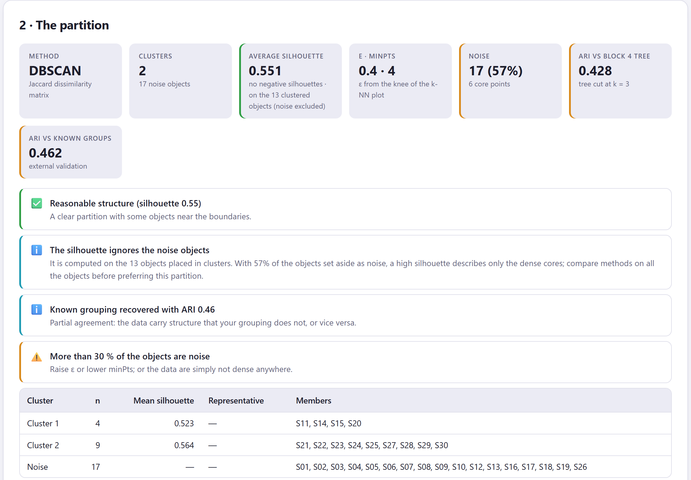
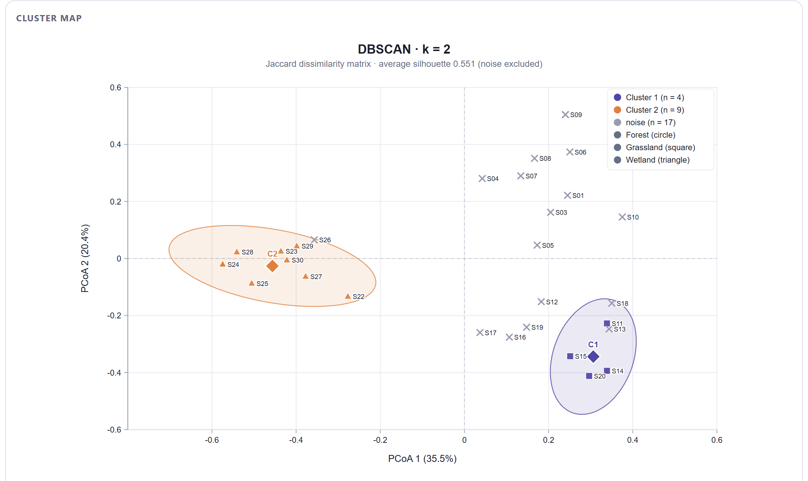
DBSCAN puede "mejorar" la silueta simplemente dejando fuera los objetos difíciles. Una silueta de 0.551 sobre 13 objetos no es mejor que una de 0.334 sobre los 30. Para comparar métodos usa la tarjeta 3, que corre todos sobre todos los objetos (DBSCAN no entra precisamente por eso), o compara el ARI con una referencia. DBSCAN es valioso aquí por otra razón: dice que los bosques no forman un núcleo compacto de composición florística.
Las dos particiones tienen casi la misma silueta y describen cosas distintas. PAM, que minimiza disimilitudes a objetos reales, reconoce que los campos orgánicos son heterogéneos: la mitad se parece a los setos. k-means sobre el PCoA, que minimiza cuadrados, prefiere tres grupos del mismo tamaño y recupera los paisajes, pero la silueta y las pertenencias difusas avisan de que el grupo de campos orgánicos es el menos definido. Con tablas de comunidades, las dos rutas son legítimas; la diferencia entre ellas es un resultado ecológico que merece contarse.
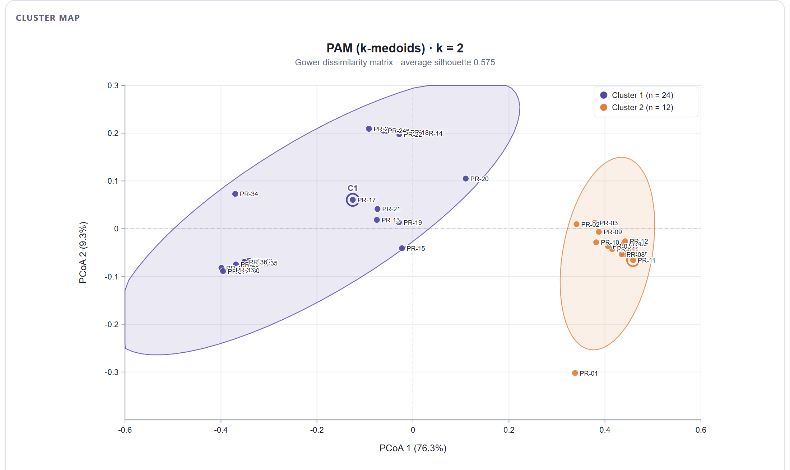
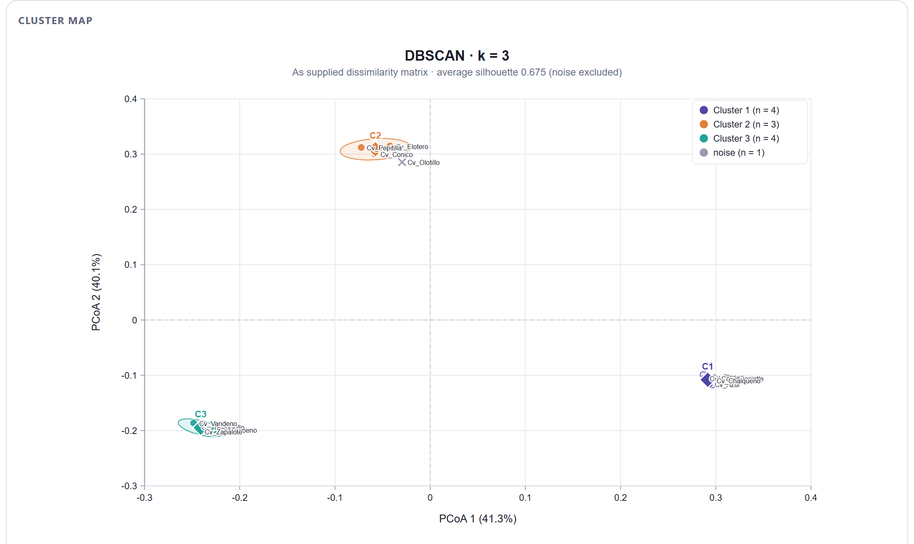
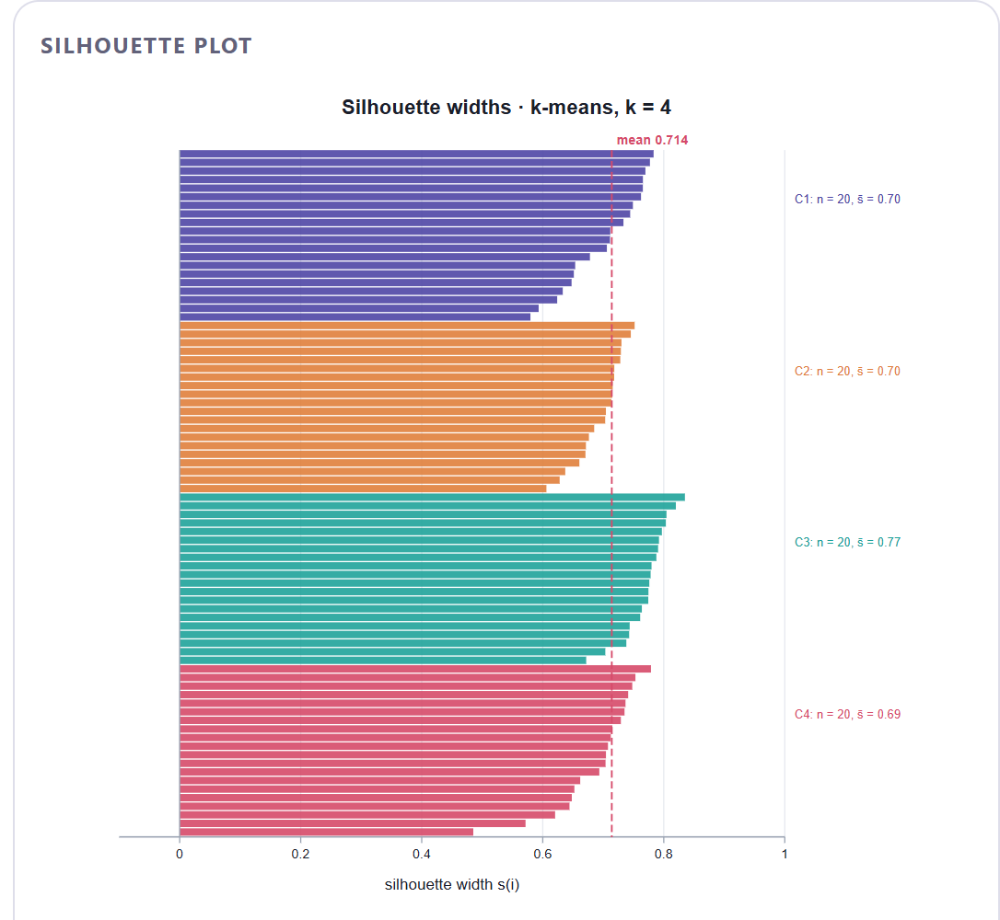
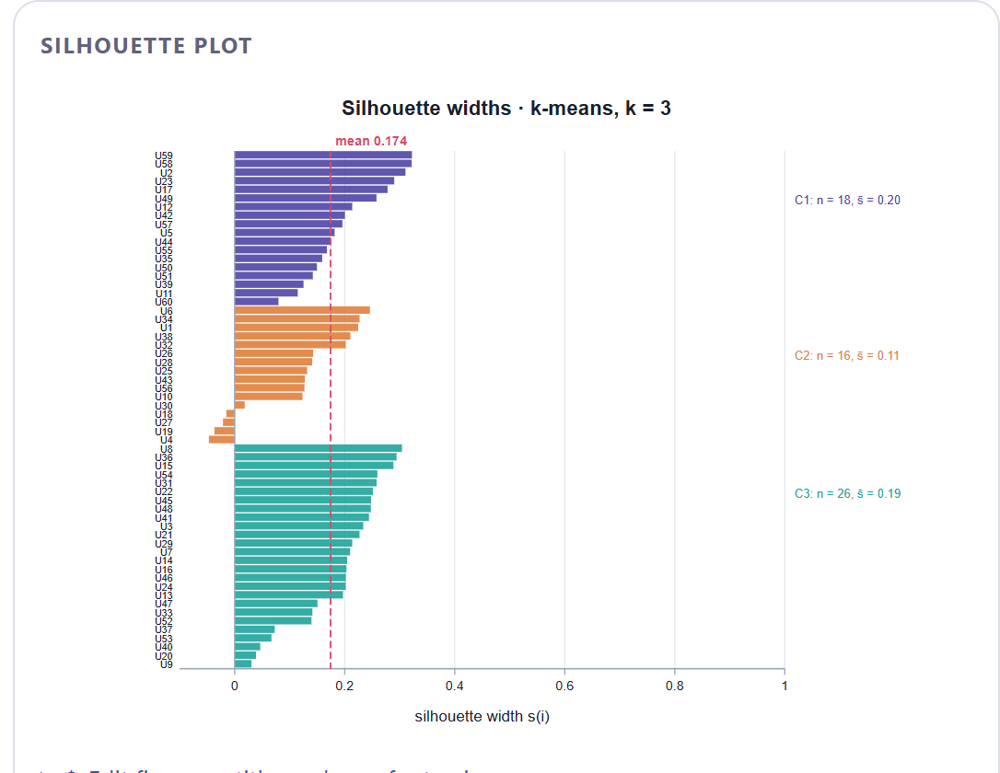
Es la cuarta señal de ausencia de estructura, después de Hopkins (Bloque 2), del desacuerdo entre coeficientes (Bloque 3) y del desacuerdo entre enlaces (Bloque 4): una silueta baja con avisos de grupos mal definidos, métodos que no coinciden entre sí y un DBSCAN que solo encuentra un grupo. De todos los métodos, DBSCAN es el único que puede responder "no hay grupos", porque no necesita k.
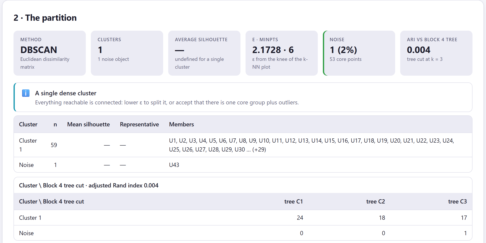
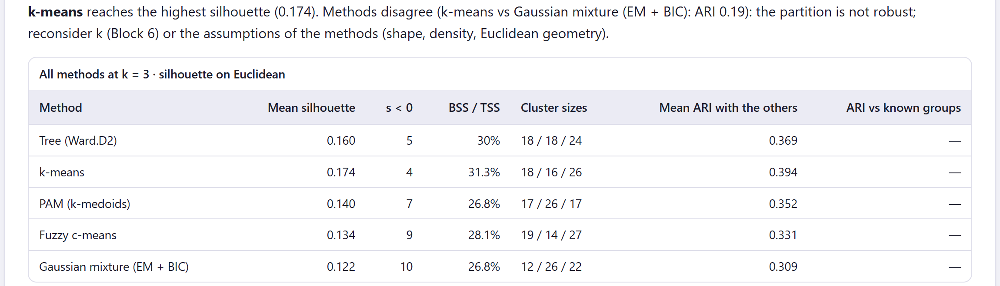
En la sección de métodos: el algoritmo con sus parámetros (algoritmo y número de arranques de k-means, m de fuzzy, modelo y criterio de la mezcla, ε y minPts de DBSCAN, grafo y σ del espectral), la fuente de coordenadas si aplica, k, la silueta media sobre qué disimilitud, y la semilla. Si comparaste métodos, el ARI mínimo entre ellos. Por ejemplo: "k-means (Hartigan–Wong, 25 arranques k-means++, semilla 1) sobre los ejes del PCoA de Bray–Curtis produjo tres grupos (silueta media 0.29) que coincidieron con los paisajes (ARI = 1.00)". El párrafo automático del Bloque 8 lo redacta con tus valores.
Con una partición en la mano, falta decidir si ese k es el correcto y si los grupos son estables. El siguiente capítulo presenta los trece criterios para elegir el número de grupos y su votación, el estadístico gap, la estabilidad por remuestreo, el soporte de las ramas del árbol, la validación externa y la comparación de algoritmos a lo largo de k.